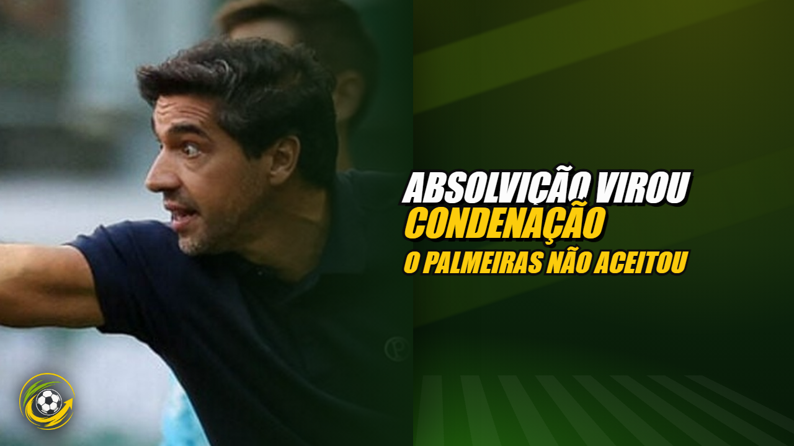

AGORA! Abel fora, e o Palmeiras não aceita o veredito
AGORA! Abel fora, e o Palmeiras não aceita o veredito
thumb: ABSOLVIÇÃO VIROU CONDENAÇÃO
imediatismocuriosidaderesolução
repetição da thumb 0%
pilares antes do corte 3 de 3